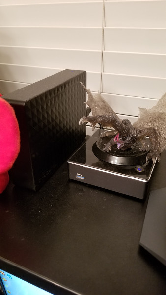
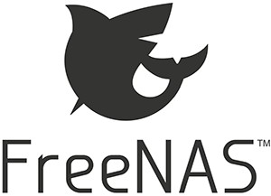

Trueblue

Trueblue project
Good day internet! So I am going to tell you a story about my NAS (Network Attached Storage) project. I have named the NAS Trueblue. Mostly because I am known as codayblue on the internet My wife is Stephiy Blue for a lot of things as well, so Trueblue seems to fit the family tech naming. Any way I am getting off topic as I some times do (Wife would probably say most of the time).
So about 2 to 3 years ago I was listening to a bunch of podcasts at work while I was mindlessly coping and converting TSQL to MySql and the casters kept talking about NAS devices. Now normally I tend to like the ideas I get from these pod casts but these couple of episodes I decided I did not like the solutions, a couple were talking about synology and the other guys were talking about western digital solutions. If any of you know me you know that I dont like using closed source solutions. So I kind of just brushed it off and went on living without a NAS.
Then it was a couple months after those episodes I was looking through a couple of external hard drives looking for data that I knew I had backed up and did not know which drive they were on. This is because I am not a very organized person. Shocking considering all of my career is based on me organizing and writing code. So around this time I was storing these external hard drives in those butter cookie tins you see grandmas keep knitting supplies in. I had around 5 or 6 external drives in all sizes. A couple were 500 gig, then most of them were 1 terabyte and above. Well while looking for this lost data I then realized I had been looking for around 2 to 3 hours to find these pictures I knew I had. By that point I had forgot why I was looking for them in the first place and got frustrated.
So at this point I knew I needed a NAS. Well technically I do not need a NAS, I just need a central place to keep my data so I have 1 spot to go to find all the things and not have to mess with tins and wires. I did not want an off the shelf product because if I am going to trust my data to this device then it has to be something I trust! So this is part where I should have done research but instead I just dove in. Well first of all I had zero idea what a NAS was. I thought it mostly just a computer with an ethernet cable. Which I am not wrong but I am not right either. There is more to a NAS then just a computer with a blinking light.
Like how do you easily get data on and off the computer? How much storage do I need? What software am I going to use? These are all questions I had to answer as I went down the rabbit hole. At this time I heard about FreeNAS, Which is a great project but the fact it was BSD and not Linux turned me away. I wanted to know this computer from the ground up. Also I thought it would need a ton of hard drives because people only talk about the raidz2 and raidz3 pooling options and I was trying to get this done as cheap as possible. So first I had to get a computer with a hard drive. Well luckly a few years before I got a gigabyte brix computer for christmas with an I7 and 16 gigs of ram. More then enough power, overkill some would say. I needed an OS for this thing. I installed Ubuntu 15.10. Now why I choose Ubuntu for this is because I was familiar with it. Had been using it for years without trouble. Then to transfer files on it I choose to put ssh and just sftp. This all worked very well until I realized I had only put a 500 gig SSD in this thing. Which could hold some of my data but not all of my data.
Now this is the part where I probably should have stopped and thought about the solution fully and came up a plan for a proper solution. Instead I knew I could attach a usb external hard drive. I did some rough math and figured out if I had got a 5 terabyte or more hard drive it would hold all my data and give me some space for future expansion. I went to Frys and picked up a 5 terebyte. I attached it and kept using sftp. This solved my issues for the time.
Fast foreward a few years. It kept working I was happy with it and I installed plex on it and also syncthing to make syncing directories that work like dropbox. Then I got to thinking. That 5 terabyte hard drive has been running for years. What happens when it dies. Well this is when poor planing comes to bite you. I started getting worried because up until that point I had been running off this one and only device. No back up. Nothing. Just that one hard drive on that computer. If the computer died yeah it would suck but the data would still be safe on that external drive.
First step get a back up that wont cost me a ton of money. At this time I had abour 3+ terabytes. Storing that much data in the cloud depending on the service can get exspensive. So I went digging for services. Much googling and calculator magic later I had choose AWS Glaciar. It seemed to the be the cheapest and the most supported by tools like Restic, RClone, and Duplicity. Although when I was getting into setting up restic and putting into a cron I noticed it supported a service called B2. I did some googling to check out what it was and found out it is an even cheaper option called Backblaze. They advertise being cheaper then AWS and when I did the math it was cheaper although if I ever need to recover my data paying for the download will be more but this is only when hard drives die or the house gets flooded, fire, etc.. So now I have back up location in the cloud. I just need to find an application to get the data there.
Well again I am worried about my data. Dont want people I dont trust to get it. So the tool I pick needs to have encryption. Needs to be strong encryption too. So the tools I found for that I mentioned above but just in case you already forgot they were Restic, RClone, and Duplicity. I tried out Duplicity first it was pretty good but not as simple as I would like it. Restic was pretty simple and really good. RClone I never got around to trying it out because restic had solved the issue. I could upgrade snapshots everyday, get a full back up every month, and clear out old back ups there were 3 months old. I stuck with it and backed up to B2. So now my data is in two places. Although downside paying to download my data when the hard drive quits still seems like a bad idea if I can some how prevent it for as long as possible. Someday though I know I will need to download that data but it will be because of something I could not control.
Now comes Trueblue. My new NAS. Built in the last couple weeks. It runs FreeNAS. I know it is not linux but I found out that BSD is not all that different, at least for the stuff I normally do. If I was developing applications for it I probably would see a difference but for storing files I dont see many differences. Now this spawned because my wife decided she wanted to dedup files. This is because when you smash a bunch of back up drives together you will probably have files you accidently duped over the time. I tried to show her how to use sftp but she did not like how it was not part of the os file system. So I should her it via Gnome Natalis. Which kind of acts like windwos SMB/CIFS. She was able to dedup more. I evently got a message from her saying she was done for the day and she never went back to finish the job. I think that is mostly because she is a windows user and I was forcing her into my world. I know how to set up SMB but permissions can be a pain. Also I got tired of command line all the things.
I had heared a lot about FreeNAS and decided to give it ago. So the build. It went “smooth”. My wife had swapped to a new computer by this time and I had her old one just laying around. I thought why not. Just need a new case, power supply and a couple of hard drives to make a RAID. The key to this whole project was that RAID. That way when a drive dies I have a chance to recover the RAID by plugging in a good drive to replace the bad and rebuild the data. So we went to frys and amazon prime. Found a nice smaller case with a couple of hard drive ports. Then I got the drives from amazon. It was 2 4 terabyte Seagate Iron Wolf drives. Maybe in the future I will get more but these will serve well not that the data has dropped to 2.2 terabytes because of deduping. threw all that together and then installed FreeNAS.
FreeNAS was pretty stright forward. It was turn the 2 disks into a mirror pool (Every disk has a copy of the data) then make a couple of data sets then just transfer all the things. So FreeNAS has built in cloud back ups and they support B2. Although they use RClone but I am fine with that tool since it checked all my boxes. After transfering all my files that was the first thing I setup. It was pretty easy to setup because they have great docs. I have syncthing and plex running on it. Had to learn how to expose data via the jails. Again great docs made it painless. I was able to make data sets for windows that just mount and hold a good chunck of our data. I also made data sets linux and syncthing so that way it just works for all my setups.
I could not recommend FreeNAS enough now. People at work think I am crazy. Hell I am starting to think I am crazy. Hope you enjoyed this super long telling of how I now have a Freenas machine.
I know I said my next post was going to be about hosting a docker registry but well this was already done and was a cool project. I am also still researching which docker registry I want to run. Also figuring out if I want to try and self sign a cert or just buy one that will take less setup to get it trusted on my machines. Although I do have the power of chef so it probably wont be that bad. I could then also upload the cookbooks for the community to set. I think I just talked my self into a solution while typing this post.